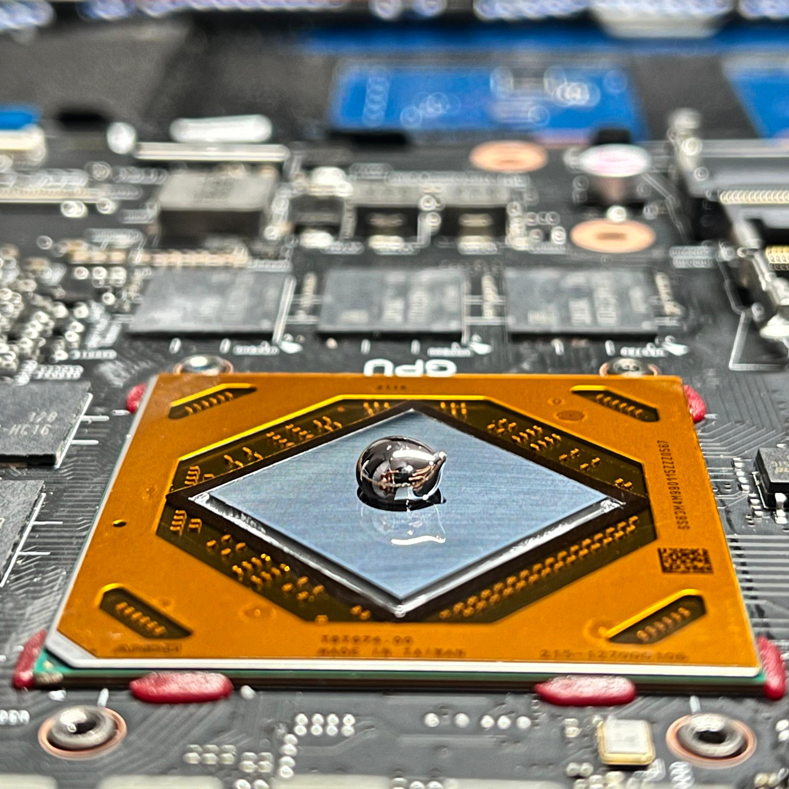
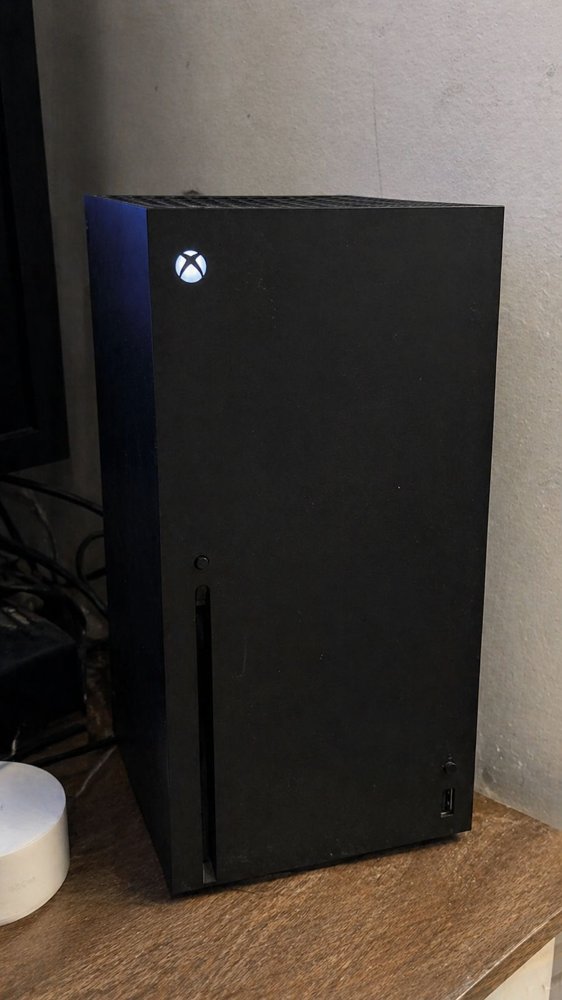
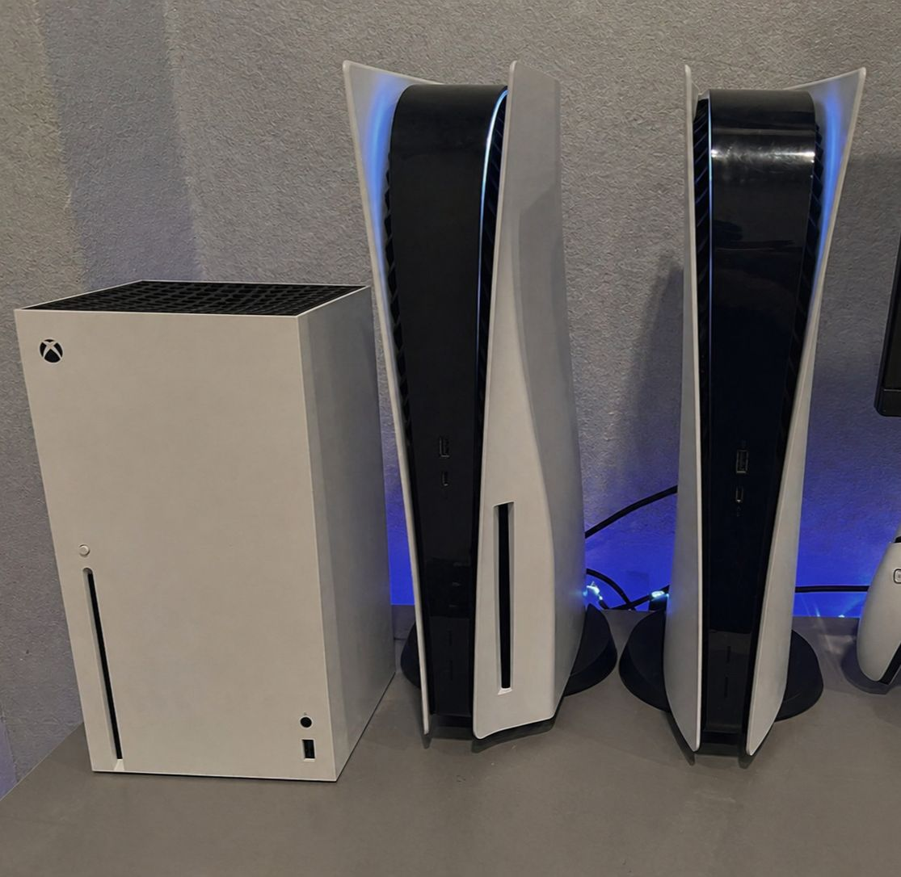
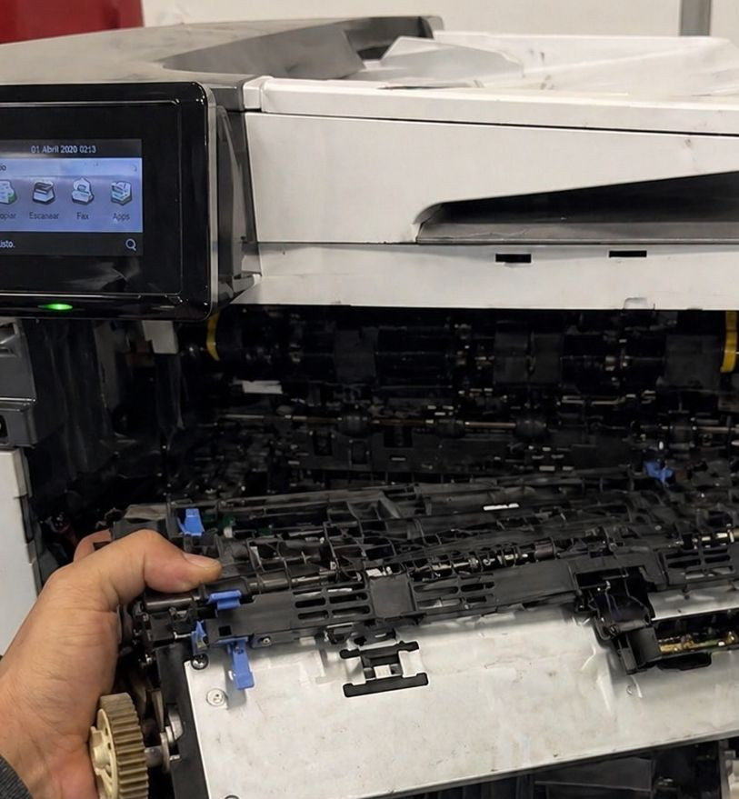
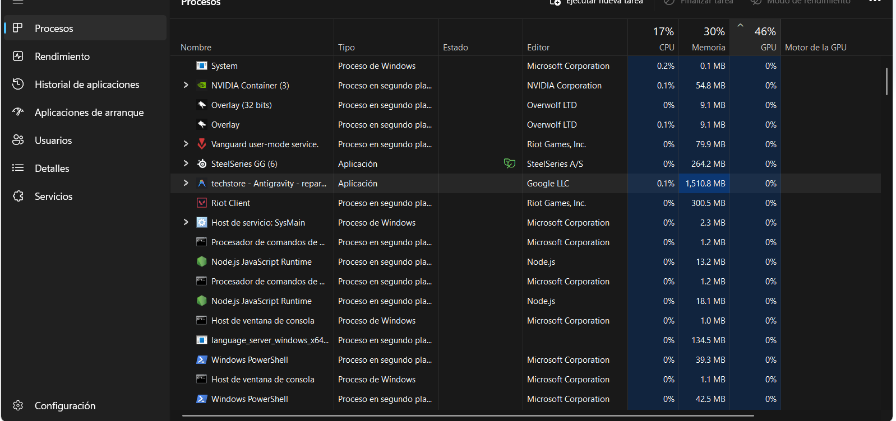
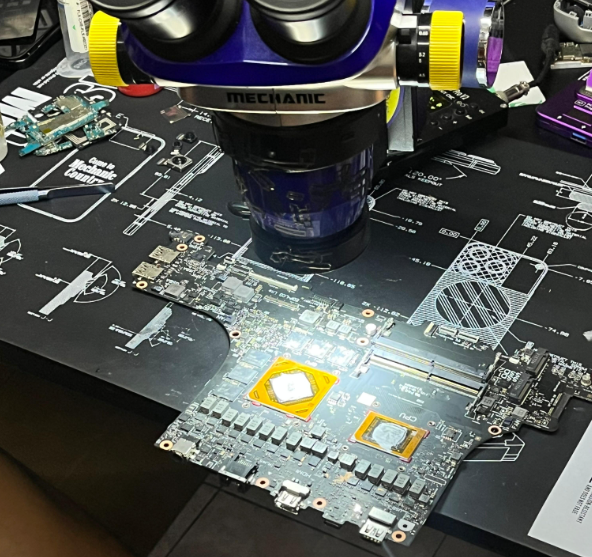

En Pixon, ofrecemos reparación de equipos con diagnóstico claro, atención directa y soluciones reales, trabajamos con computadoras, laptops, celulares, consolas e impresoras, enfocándonos en detectar la falla desde el origen y resolverla sin procesos innecesarios, para que tu equipo vuelva a funcionar estable, rápido y seguro.
En Pixon, atendemos equipos de casa, gamer y oficina en Cancún, identificamos problemas de rendimiento, fallas físicas o errores del sistema, aplicando soluciones técnicas precisas para recuperar la estabilidad sin comprometer tu información (protegemos tus datos durante todo el proceso).
En Pixon Cancún, realizamos mantenimiento y reparación de consolas como PS5, Xbox y Nintendo Switch, solucionamos problemas de sobrecalentamiento, fallas de video y errores de encendido, alargando la vida útil del equipo con procesos técnicos adecuados (sin daños por malas prácticas).




En Pixon PC Cancún, solucionamos fallas en impresoras de inyección y láser, desde problemas mecánicos hasta errores de conexión, dejamos tu equipo listo para funcionar correctamente en casa o negocio (configuración completa incluida).
Si tu equipo presenta lentitud, pantallas azules (pantallas de la muerte), congelamientos, errores o fallas constantes, en Pixon realizamos diagnóstico y optimización completa, restauramos el sistema para devolver velocidad, estabilidad y rendimiento real (sin configuraciones engañosas).


Encuéntranos en Cancún, Quintana Roo.
Brindamos servicio técnico de computadoras en Cancún con cobertura en Zona Hotelera, Huayacán, Polígono Sur, Puerto Juárez y alrededores.
Haciendas, Cancún, Quintana Roo 77539
+52 998 669 0777
Lunes – Domingo · con cita previa
Haz clic en lo que necesites reparar hoy.
Recolección y entrega a tu puerta en Cancún y alrededores.
¿Qué opinan nuestros clientes?
Déjanos un comentario y calificación sobre nuestro servicio.
Deja tu Comentario